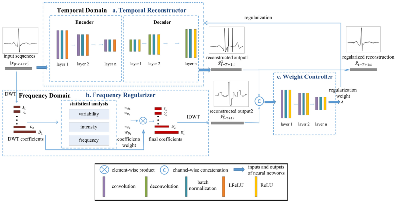
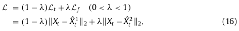
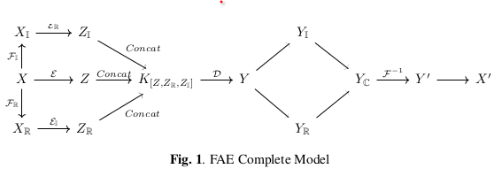
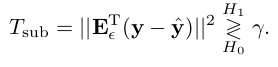

Review papers
An2015
Variational Autoencoder based Anomaly Detection using Reconstruction Probability
InProceedings (An2015)
An, J. & Cho, S.
Variational Autoencoder based Anomaly Detection using Reconstruction Probability
2015

The algorithm:
VAEs learn a distribution of the inputs
The latent distribution \(p(z)\) acts as a prior (in Bayesian terms), and is the multivariate standard normal and isotropic (i.e. separable, covariance matrix is diagonal)
\(f(x)\) is the encoder function
\(g(z)\) is the decoder function
The decoder function \(g(z)\) maps the distribution of the latent variable \(z\) into an output distribution \(p(x|z)\) which should resemble the original distribution of \(x\)
During reconstruction, when we sample a single latent variable \(z\), we reconstruct a single vector \(\hat{x}\), so we have a single sample of the output distribution \(p(x|z)\)
Idea for using Reconstruction Probability as an anomaly measure:
sample multiple latent variables \(z^k\), and for each of them reconstruct the vector \(\hat{x}^k\)
use all the vectors \(\hat{x}^k\) to estimate the probability \(p(x|z)\), and then compute the likelihood that the original input \(x\) comes from this distribution
assuming \(p(x|z)\) is a an isotropic normal distribution, we just compute the mean \(\mu = E \lbrace \hat{x} \rbrace\) and covariance matrix \(\Sigma\) (diagonal, so basically we compute the variance \(\sigma_i^2\) per entry of the vector)
the log-likelihood that the original \(x\) is generated by this distribution amounts to a weighted \(\ell_2\) norm:
\[L(x) = \sum_i \frac{(x_i - \mu_i)^2}{\sigma_i^2}\]
we use this as an anomaly score: small value = more anomaly, large value = more normal
small value => anomaly, because \(x\) does not fit the output probability \(p(x|z)\)
Better than normal AE, because the variances are taken into account
Perhaps the variances \(\sigma_i^2\) can be used as indicators for feature selection?
- or are they just similar to the clones values based on the input variances
Wievel2019
Continual Learning for Anomaly Detection with Variational Autoencoder
InProceedings (Wiewel2019)
Wiewel, F. & Yang, B.
Continual Learning for Anomaly Detection with Variational Autoencoder
ICASSP 2019 - 2019 IEEE International Conference on Acoustics, Speech and Signal Processing (ICASSP), 2019, 3837-3841
Use the full loss function as anomaly score, which includes the reconstruction error and the KL distance between the distribution of \(z\) and the standard normal prior \(p(z)\)
the so called evidence lower bound (ELBO):

While [4, 5, 6, 7] use the reconstruction probability E q φ (z|x i ) [ln p θ (x i |z)] as the anomaly score, we use the ELBO as the anomaly score because it gives slightly better results in our experiments.
The “reconstruction probability” used in An2015 is just the first part of the loss function (ELBO), why not use the full loss, since this is what the model was trained to minimize
Yao2023
Article (Yao2023)
Yao, Y.; Ma, J. & Ye, Y.
Regularizing autoencoders with wavelet transform for sequence anomaly detection
Pattern Recognition, 2023, 134, 109084


- Use a custom loss function which includes filtering with DWT
- Learn the regularization parameter \(\lambda\) which balances between AE loss and fixed DWT error
- Only for training. In production, only AE used, as normal.
- Empirical, non-reliable, DWT features
- Idea: Learn less the vectors which are less modified by DWT
- when second term is close to 0 (i.e. input vector unchanged by DWT filtering), \(\lambda\) becomes close to 1, which reduces the influence of the AE loss, so the AE will learn less about these vectors
- so these vectors will be reconstructed more poorly, so more likely to be considered outliers
- a way to make some inputs more likely to be declared outliers: vectors untouched by DWT filtering are learned less, so more likely to be outliers
- Afterthoughts:
- What if we multiply somehow two learnables? i.e. \(\lambda \cdot \| AE loss \|\), or \(AE1 loss \cdot AE2 loss\). Which learns faster?
- If one NN learns first (e.g. \(\lambda\)), it will reduce the incentive for the other one to learn.
- What if \(\lambda\) adapts much slower than the AE? \[(1 - \lambda) AE_{loss} + \lambda Const\]
- AE loss drops first, then lambda will learn much later if the input is an outlier or not:
- if AE loss is small, \(\lambda\) will be close to 1
- if AE loss is large, \(\lambda\) will be close to 0
- just an indirect reflection of AE loss / C ?
- Two NNs in competition. Does it matter which one learns first?
- Outlier detection based on speed of learning?
Lappas2021
InProceedings (Lappas2021)
Lappas, D.; Argyriou, V. & Makris, D.
Fourier Transformation Autoencoders for Anomaly Detection
ICASSP 2021 - 2021 IEEE International Conference on Acoustics, Speech and Signal Processing (ICASSP), 2021, 1475-1479

- Augment input vector with Fourier transform, real and imaginary parts
- Learn three coders, for each part
- Concatenate the latent variables
- A single decoder, which produces the real and imaginary parts
- Architecture:
- 3N => 3L => 2N
- Y’ to X’ means what?? “Another mapping”
Choi2023
TechReport (Choi2023)
Choi, J.; Park, J.; Japesh, A. & Adarsh
A Subspace Projection Approach to Autoencoder-based Anomaly Detection
arXiv, arXiv, 2023

- Information theoretic interpretation (MIMO), but not sure if useful at all
- Practically: evaluate reconstruction error only on the subspace of the least significant eigenvectors of the error vectors
- If error is large => outlier, if small, normal
- Just another example of weighted \(\ell_2\) norm
- here is in the space of the eigenvectors, inversely prop to variance (eigenvalues) (here just with 0, 1 binary selection)
- here it is the covariance matrix of all errors, since for AE we have a 1-to-1 input to output (single output vector)
- for VAE, we have the same idea, but the covariance matrix is per input vector, since we have 1-to-many (one input, multiple outputs) (see An2015)